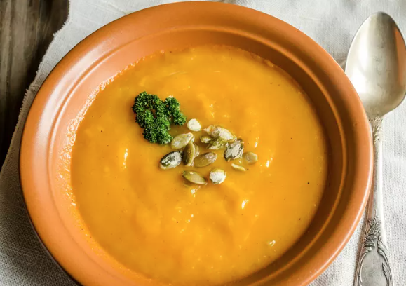

Ingrédients
Ingrédients pour 6 personnes :
- 1/4 de potiron
- 8 pommes de terre
- 50cl de bouillon de volaille
- 200g de crème fraîche
- des croutons
- çoix de muscade
- persil
- sel
- poivre
Étape 1
Enlever la peau et la partie filandreuse du potiron pour ne conserver que la pulpe. Couper la pulpe grossièrement en gros morceaux (3 cm x 3). Éplucher les pommes de terre.
Étape 2
Faire cuire à la vapeur potiron et pommes de terre (dans l'autocuiseur et ensemble c'est plus simple). Parallèlement, faire chauffer le bouillon de volaille.
Étape 3
Passer potiron et pommes de terre ensemble au mixeur en ajoutant régulièrement du bouillon bouillant.
Étape 4
Reverser le mélange ainsi obtenu dans une casserole. Ajouter la crème, mélanger, assaisonner (sel, poivre, muscade) et porter à ébullition.
Étape 5
Aux premiers bouillons, retirer la soupe, la servir dans une jolie soupière avec du persil grossièrement haché.